Shuran Song
I am an assistant professor in computer science department at Columbia University.
My research interests lie broadly in artificial intelligence, with emphasis on computer vision and robotics. My work focuses on establishing the complete research infrastructure for the field of 3D visual scene understanding: from developing fundamental algorithms to deploying them in practical real-world robotics applications; from constructing large-scale 3D datasets to designing effective 3D data representations.
Email: shurans AT cs.columbia.edu
Address: 530 West 120th St, New York, NY 10027
Google Scholar | CV | Github
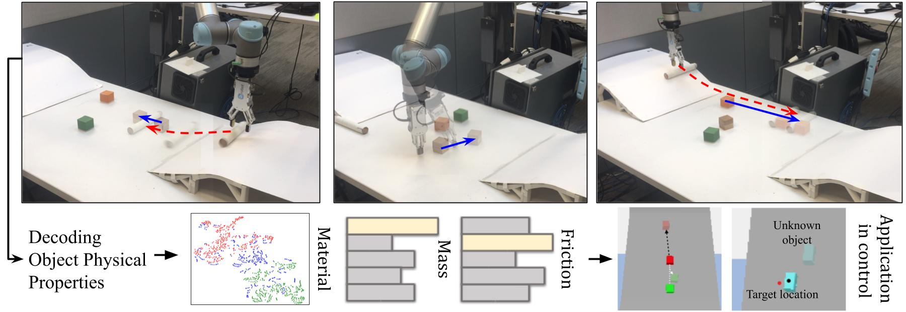
 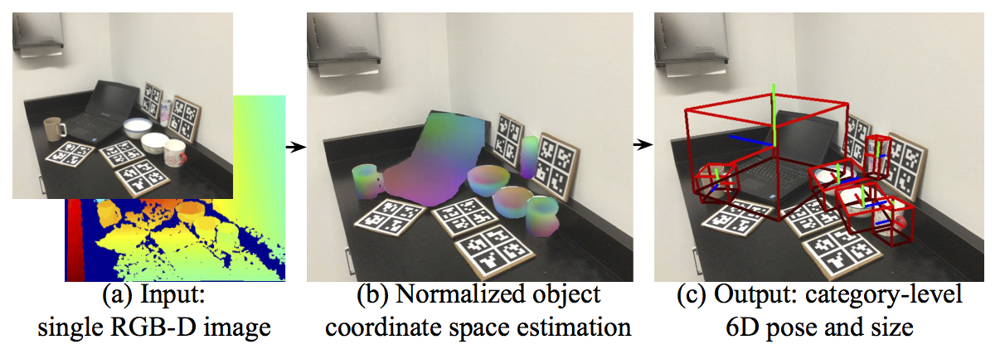
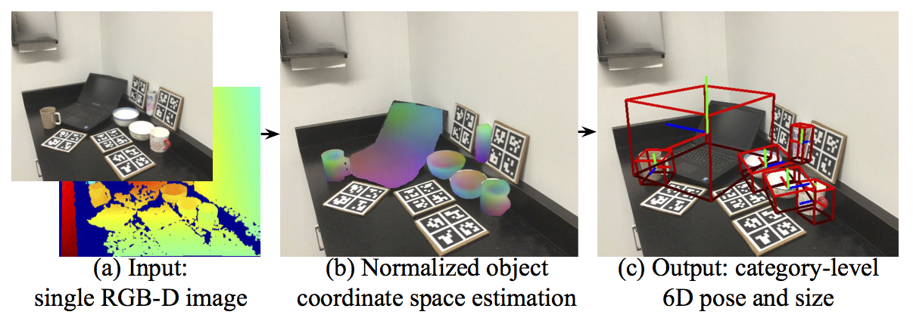
 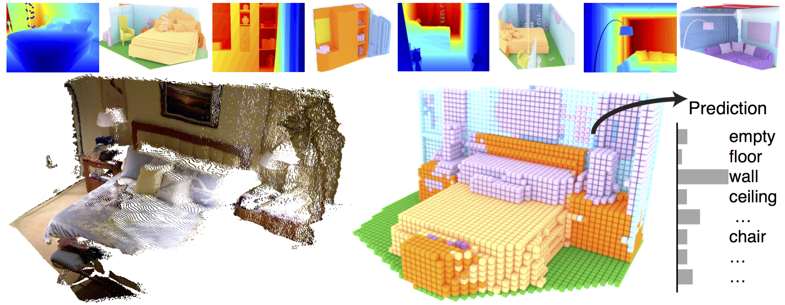
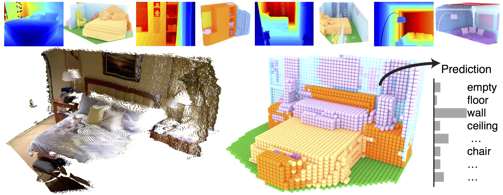
 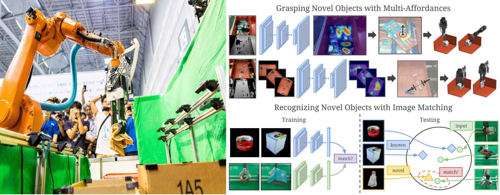
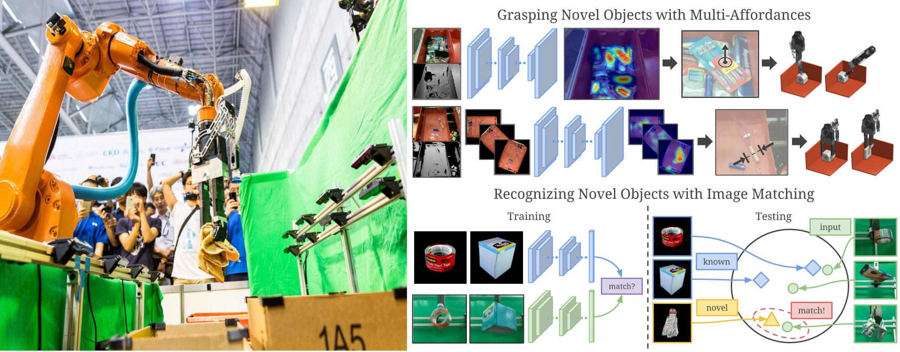

 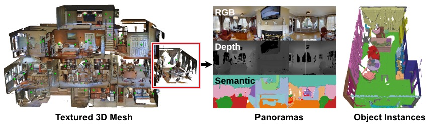
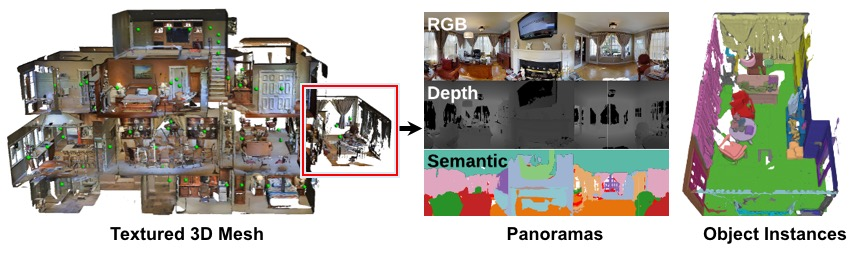

 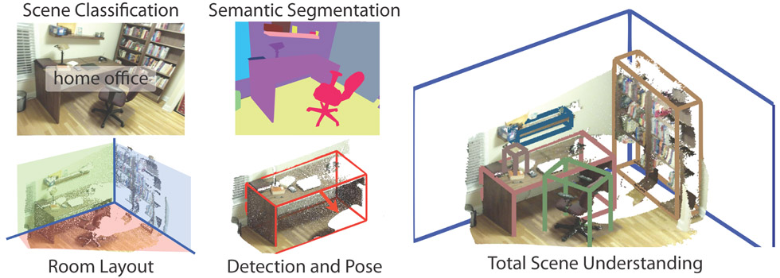
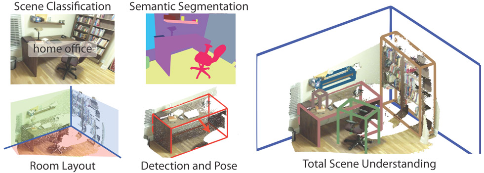
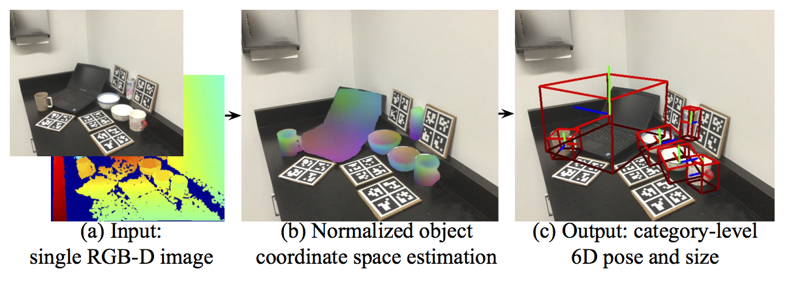
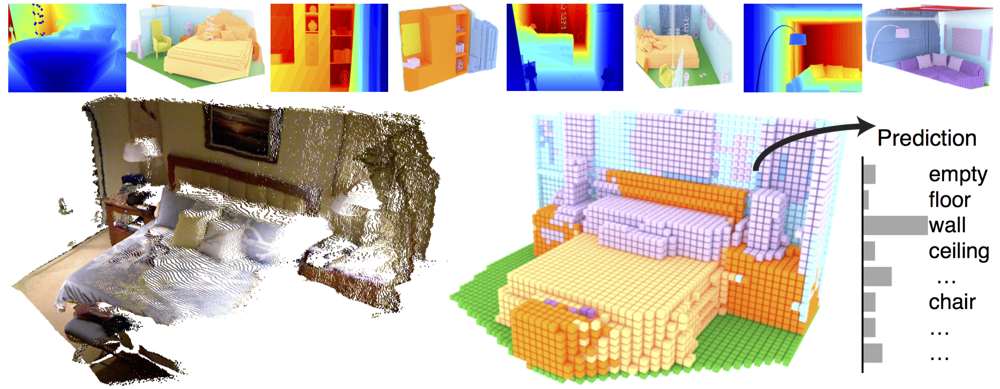
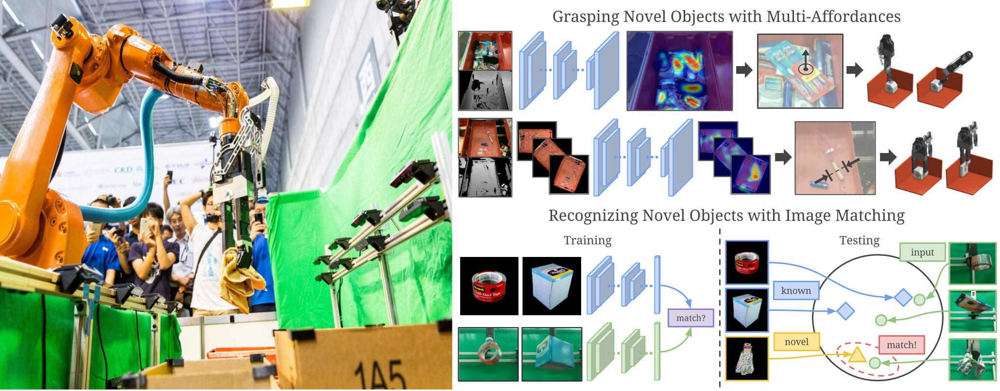
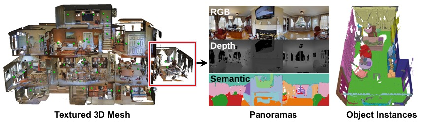
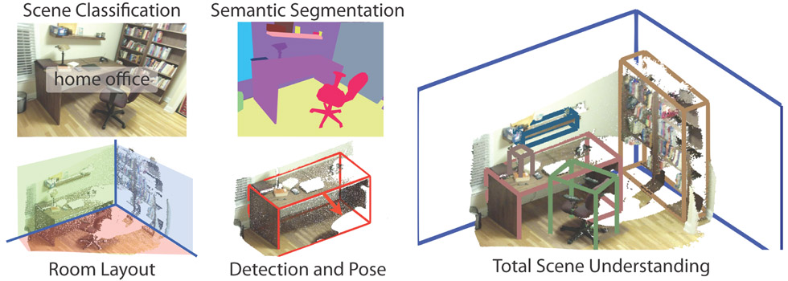